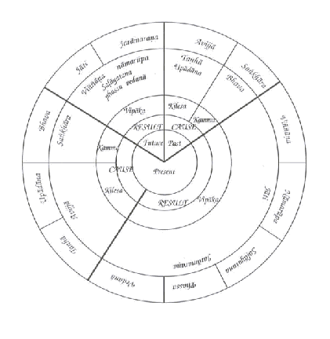
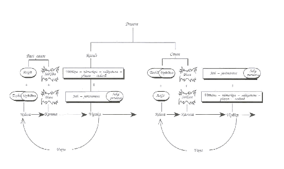

4. O Formato Padrão
Conteúdo:
c. Consciência até sensações; nascimento, envelhecimento e morte
O formato
padrão de apresentação do princípio da Origem Dependente é bastante complexo,
um tema mais para o especialista do que para o leitor casual, requerendo
conhecimentos abrangentes de Budismo e um vocabulário abrangente de termos em
Pali para permitir a sua compreensão completa. Existem também escrituras
dedicadas exclusivamente ao assunto. [3] Aqui irei resumir os fatores básicos.
Os
principais fatores[4]
Os principais fatores já foram mencionados no Capítulo da Visão Geral da
Origem Dependente, portanto aqui eles serão mencionados apenas de forma breve,
mencionados primeiro no idioma Pali e seguidos das definições em Português:
Avijja
=> sankhara => viññana => namarupa => salayatana => phassa =>
vedana => tanha => upadana => bhava => jati => jaramarana
...soka parideva dukkha domanassa upayasa => Dukkha samudaya.
Ignorância
=> formações => consciência => mentalidade-materialidade (nome e forma) => seis bases dos sentidos => contato =>
sensação => desejo => apego => ser/existir => nascimento => envelhecimento e morte
... tristeza, lamentação, dor, angústia e desespero => A origem do sofrimento.
A seqüência
da cessação prossegue de acordo com os mesmos títulos.
Como o
princípio da Origem Dependente revolve sob a forma de um ciclo, sem início e sem fim, uma forma de
representação mais acurada está demonstrada na figura abaixo.

1. Avijja = Desconhecimento
ou ignorância de dukkha, sua causa, sua cessação e o caminho que conduz à
sua cessação (as Quatro Nobres Verdades); e de acordo com o Abhidhamma,
desconhecer o que ocorreu antes (o passado), o que virá depois (o futuro), o
que ocorreu tanto antes como depois, (o passado e o futuro), e o princípio da
Origem Dependente.
2. Sankhara
= Formações ou Impulsos Volitivos: formações corporais ou ações
intencionais; formações verbais ou linguagem intencional; formações mentais ou
pensamentos [5]; e de acordo com o Abhidhamma: formações meritórias ou kamma bom, (puññabhisankhara),
formações não meritórias ou kamma ruim, (apuññabhisankhara), e formações
fixas ou inamovíveis ou kamma meritório especial, (aneñjabhisankhara).
3. Viññana
= Consciência através do olho, ouvido, nariz, língua, corpo e mente,
(incluindo a consciência de renascimento ou religação, patisandhi viññana).
(As seis consciências).
4. Namarupa
= Mentalidade-materialidade (nome e forma): nama, (nome ou mente): sensação,
percepção, intenção, contato, atenção, ou de acordo com o Abhidhamma: os khandhas
da sensação, percepção e formações; e rupa, (forma ou materialidade): os
quatro elementos, terra, água, fogo e ar e todos os elementos derivados destes.
5. Salayatana
= Os seis meios ou bases dos sentidos: olho, ouvido, nariz, língua,
corpo e mente.
6. Phassa
= Choque ou contato: contato no olho, contato no ouvido, contato no
nariz, contato na língua, contato no corpo contato na mente.[6]
7. Vedana = Sensações (de prazer, dor e
indiferentes) que surgem do contato no olho, ouvido, nariz, língua, corpo e
mente. [7]
8. Tanha = Desejo por visões; desejo por sons;
desejo por aromas; desejo por sabores; desejo por sensações corporais; desejo
por objetos mentais: os seis desejos. [8]
9. Upadana = Apego a objetos sensuais, (kamupadana),
isto é, visões, sons, aromas, sabores e sensações corporais; apego a idéias, (ditthupadana);
apego a preceitos e rituais, (silabbatupadana); apego à idéia de um
eu, (attavadupadana).
10. Bhava
= Ser/existir, as condições que levam ao nascimento; também os reinos de
existência: o reino sensual, (kamabhava); o reino da matéria sutil, (rupabhava);
o reino imaterial, (arupabhava).
Uma
definição alternativa: Kammabhava, o plano da ação, ou ações que condicionam
o renascimento: ações meritórias, (puññabhisankhara); ações
demeritórias, (apuññabhisankhara); ações imperturbáveis, (aneñjabhisankhara);
e Upapattibhava, os reinos de renascimento: o reino sensual; o reino da matéria sutil;
o reino imaterial.
11. Jati
= Nascimento, o surgimento dos khandhas e das bases dos sentidos,
nascimento; o aparecimento ou origem das coisas [9].
12. Jaramarana
= Envelhecimento e morte: jara: o processo de envelhecimento, a
diminuição das faculdades; e marana: a desintegração dos khandhas,
a dissolução do princípio vital, morte; ou como alternativa a dissipação e
dissolução dos fenômenos. [10]
A seguir encontram-se alguns exemplos:
(Asava)
=>Avijja – Ignorância: Acreditar que exatamente este eu irá
renascer em vários estados devido a certas ações em particular; que após a
morte não há nada; que a vida é um processo aleatório no qual as ações boas ou
más não produzem nenhum fruto; que simplesmente aderindo a uma certa religião a
pessoa estará ‘salva’ de forma automática; que a riqueza material irá trazer a
verdadeira felicidade ... E disto ...
=> Sankhara
– Formações: Pensar e intencionar de acordo com essas crenças; considerar e
planejar ações, (kamma), de acordo como essas intenções, algumas boas,
algumas más e algumas neutras. E disto…
=> Viññana
– Consciência: a percepção e consciência das sensações que estarão relacionadas
com intenções determinadas. A mente ou consciência é configurada de certas
qualidades específicas através da intenção. Na morte, o momentum dos formações
propulsionados pela lei de kamma, induzem a consciência de religação, (patisandhi
vññnana), assim moldada a assumir
uma esfera de renascimento e nível de existência que lhe seja adequada. Isto é
o renascimento. E disto…
=> Namarupa
– Mentalidade-materialidade (nome e forma): O processo de renascimento prossegue para criar
uma forma de vida pronta para gerar mais kamma. Como resultado, surgem os khandhas
rupa, vedana, sañña e sankhara na sua totalidade, completos com suas
qualidades e defeitos distintos que lhes foram providos por meio da influência
modeladora das condições ou kamma e restringidos pelas limitações daquela
esfera de existência em particular, (bhava), quer seja humana, animal,
divina, etc….
=> Salayatana
– As seis bases dos sentidos: Um ser senciente tem que ter os meios para se
comunicar com o seu meio ambiente para poder funcionar e se desenvolver dentro
dele. Dessa forma, suportado pelo corpo e mente e em conformidade com o
momentum do kamma, o organismo prossegue no desenvolvimento das seis bases dos
sentidos, os órgãos dos sentidos do olho, nariz, ouvido, língua, corpo e mente.
E disto…
=> Phassa
- Contato: O processo da consciência agora opera atravéss do contato ou choque
de três fatores. Eles são: o órgão do sentido interno (olho, ouvido, nariz,
língua, corpo e mente), o objeto do sentido externo, (visões, sons, aromas,
sabores, sensações corporais e objetos mentais), e a consciência, (consciência
no olho, consciência no ouvido, consciência no nariz, consciência na língua,
consciência nas sensações tangíveis e consciência na mente). Na dependência
desse contato. Irá ocorrer…
=> Vedana
– Sensação: as sensações ou o ‘reconhecimento’ das qualidades dos contatos
sensuais, quer sejam agradáveis, (sukhavedana – sensações prazerosas);
desagradáveis ou dolorosas, (dukkhavedana – sensações desprazerosas); ou
indiferentes, equanimidade, (adukkhamasukha-vedana – sensação neutra; ou upekkhavedana
– sensação equânime). De acordo com a natureza dos seres não iluminados, o
processo não para aqui, mas segue para…
=> Tanha
– Desejo: Sensações agradáveis tendem a produzir a alegria e o prazer, desejo e
busca por mais sensações agradáveis; quanto às sensações estressantes ou
desagradáveis existe o desprazer, o desejo de destruí-las ou eliminá-las. A
sensação neutra neste contexto é considerada como uma forma sutil de sensação
prazerosa porque ela não perturba a mente e evoca um certo contentamento. E
disto…
=> Upadana
– Apego: à medida que o desejo se intensifica, ele se transforma no agarramento
ou apego ao objeto em questão. Enquanto um objeto ainda não tiver sido alcançado,
haverá desejo; assim que o objeto for alcançado, ele será agarrado com firmeza
pelo apego. Isso se refere não somente aos objetos sensuais, (kamupadana),
mas também a idéias e opiniões, (ditthupadana), métodos de prática ou
técnicas, (silabbatupadana), e a idéia de um eu, (attavadupadana).
Por conta desse apego segue-se…
=> Bhava
– Ser/existir: intenção e ação
deliberada para produzir e controlar as coisas de acordo com as diretrizes do
apego, levando a mais um ciclo de todo o processo de conduta, (kammabhava),
sendo kamma bom, kamma ruim ou kamma neutro, dependendo das qualidades do
desejo e apego que os condicionaram. Por exemplo, alguém que deseje renascer no
paraíso irá fazer aquelas coisas que crê irão conduzí-lo ao renascimento no
paraíso, dessa forma assentando a base para que os cinco khandhas
reapareçam no plano, (bhava), apropriado àquelas ações, (kamma),
(upapattibhava). Com o processo de criação de kamma em plena operação,
este elo dá origem ao seguinte, que é ...
=> Jati
– Nascimento: começa com a consciência de religação, a qual é dotada de
características que dependem do momentum do kamma, e conecta com um estado que
lhe é apropriado; os cinco khandhas surgem em um novo contínuo vital,
compreendendo, mentalidade-materialidade (nome e forma), as seis bases dos sentidos, contato e
sensação. Quando há o nascimento, o que segue de forma inevitável é…
=> Jaramarana
– Envelhecimento e morte: a decadência e dissolução daquele contínuo vital.
Para o ser não iluminado essas coisas estão a cada instante ameaçando a vida de
forma explícita ou dissimulada. Portanto, na vida do ser não iluminado, a
velhice e a morte trazem consigo de forma inevitável…
=> Soka
- tristeza; parideva - lamentação; ddukkha – dor; domanassa
– angústia e upayasa – desespero, que no seu conjunto podem ser
resumidas simplesmente como ‘sofrimento.’ Dessa forma temos as palavras finais
da fórmula do princípio da Origem Dependente: “Assim é a origem de toda essa
massa de sofrimento.”
No entanto,
como o princípio da Origem Dependente funciona como um ciclo, ele não para por
aí. O último fator se torna um elo crucial na continuação do ciclo. De modo
mais específico, a tristeza, lamentação e assim por diante são todos
manifestações das impurezas. Essas impurezas são quatro em número, isto é: a
preocupação com a satisfação dos desejos dos cinco sentidos, (kamasava);
apego a idéias e crenças, num exemplo em que o corpo é um eu ou pertence a um
eu, (ditthasava); desejo por vários estados de ser e a aspiração de
alcançá-los e mantê-los, (bhavasava); e a ignorância em relação ao modo
como as coisas são, (avijjasava).
O
envelhecimento e a morte causam um efeito inflamatório nas impurezas: em
relação a kamasava, eles causam sentimentos de separação das pessoas
amadas e estimadas; em relação a ditthasava, eles confrontam a crença
inata no eu e o apego ao corpo; em relação a bhavasava, eles significam
a separação de estados de ser muito queridos; em relação a avijjasava, a
ausência de compreensão no nível fundamental, (tal como não compreender a
natureza da vida, envelhecimento e morte e como devemos nos relacionar com
isso), o envelhecimento e a morte fazem com que o ser não iluminado experimente
medo, melancolia, desespero e o apego a superstições. Essas impurezas são,
portanto, os fatores determinantes para que tristeza, lamentação, dor, angústia
e desespero surjam assim que o envelhecimento e a morte apareçam.
A tristeza
e o sofrimento influenciam a mente de forma negativa. Sempre que o sofrimento
surge, a mente fica confusa e embaralhada. O surgimento do sofrimento é
portanto proporcional ao surgimento da ignorância, tal como mencionado no
Visuddhimagga (Vism):
‘Tristeza, dor, angústia e desespero são inseparáveis da ignorância e a
lamentação é a norma para o ser deludido. Por essa razão, quando a tristeza
está completamente manifestada, assim também a ignorância está completamente
manifestada.’ [Vism.576]
* * *
‘Quanto à ignorância, saiba que ela surge da tristeza...’ [Vism.577]
* * *
‘A ignorância está presente enquanto a tristeza estiver presente.’
[Vism.529]
* * *
‘Com o surgimento das impurezas existe o surgimento da ignorância.’
[MN.I.54] (MN 9)
Portanto,
pode-se dizer que para o ser não iluminado, o envelhecimento e morte, junto com
o seu séquito – tristeza, lamentação, dor, angústia e desespero – são fatores
para produzir mais ignorância, dessa forma girando o ciclo mais uma vez.
O ciclo da
Origem Dependente também é conhecido como a Roda do Ser/existir, (bhavacakka),
ou Roda do Samsara. Esse modelo abrange três vidas – a ignorância e as
formações estão numa vida, a consciência até o ser/existir numa segunda vida,
enquanto que o envelhecimento e morte (com tristeza, lamentação e assim por diante)
em uma terceira. Tomando a vida intermediária como sendo a presente, podemos
dividir os três períodos de vida, com o conjunto completo dos doze elos do
ciclo da Origem Dependente, em três períodos de tempo da seguinte forma:
1. Vida Passada – Ignorância, formações
2. Vida Presente – Consciência, mentalidade-materialidade (nome e forma), bases dos
sentidos, contato, sensação, desejo, apego, ser/existir.
3. Vida Futura – Nascimento, envelhecimento e morte (tristeza,
lamentação, dor, angústia e desespero).
Dentre
esses três períodos, o período do meio, o presente, é a nossa base. Sob essa
perspectiva, vemos a relação do período passado como sendo puramente causal,
isto é, resultados no presente são derivados de causas do passado (causas do
passado => resultados no presente), enquanto que o período futuro mostra
específicamente resultados que se estendem de causas no presente para
resultados no futuro (causas no presente => resultados no futuro). Assim o
período do meio, o presente, contém ambas as condições, causais e resultantes.
Podemos agora descrever o ciclo completo em quatro seções:
1. Causa Passada = Ignorância, formações.
2. Resultado Presente = Consciência, mentalidade-materialidade (nome e forma), bases
dos sentidos, contato, sensação.
3. Causa Presente = Desejo, apego, ser/existir.
4. Resultado Futuro = Nascimento, envelhecimento, morte (tristeza,
lamentação, etc.)
Alguns dos
elos nesse ciclo possuem significados que se correlacionam e eles podem ser
agrupados da seguinte forma:
Da
descrição da ignorância, (avijja), parece que o desejo, (tanha),
e o apego, (upadana), estão envolvidos, especialmente o apego ao eu, que
está presente em todos momentos. Não compreender a verdade da vida, e acreditar de forma equivocada num eu, conduz
ao desejo em nome desse eu, junto com as suas formas variadas de apego. Nas
palavras ‘Com o surgimento das impurezas existe o surgimento da ignorância,’ kamasava,
(a impureza do desejo sensual), bhavasava, (a impureza do desejo por
ser), e ditthasava, (a impureza do apego a idéias), são todos tipos de
desejo e apego. Portanto, ao falar da ignorância, o significado sempre inclui o
desejo e o apego.
O mesmo se
aplica a todas as descrições do desejo e do apego – a ignorância está sempre
conectada com eles. A premissa deludida de que as condições são entidades reais
é o fator determinante para que o desejo e o apego surjam. Quanto mais desejo e
apego houver, mais o discernimento será colocado de lado e a atenção plena e o
comportamento racional serão comprometidos. Portanto, ao falar do desejo e do
apego, a ignorância está implícita de forma automática.
Sob essa
perspectiva, a ignorância como causa do passado e o desejo e apego como causas
no presente, significam em grande parte a mesma coisa. Mas a ignorância é
classificada como um fator determinante do passado, enquanto que o desejo e o
apego são classificados como fatores determinantes no presente para mostrar
cada um desses fatores na sua relação proeminente com os demais fatores na Roda
do Ser/existir.
Formações,
(sankhara), aparecem no segmento da vida passada enquanto que
ser/existir, (bhava), ocorre no segmento da vida presente, mas cada um
desempenha um papel decisivo no reino, ou bhava, no qual a vida irá
aparecer, e dessa forma eles possuem significados similares, diferindo apenas
em termos de ênfase. Sankhara se refere especificamente ao fator da
intenção, (cetana), que é o fator predominante na criação de kamma. Bhava
tem um significado mais amplo, incorporando ambos, kammabhava e upapattibhava.
Kammabhava, como sankhara, tem a intenção como principal força
motivadora, mas difere de sankhara
ao abranger o processo completo de geração das ações. Upapattibhava se
refere aos cinco khandhas que surgem como resultado de kammabhava.
c.
Consciência até sensações; nascimento,
envelhecimento e morte
O segmento
do ciclo da consciência até as sensações é a vida presente, descrita ponto por
ponto para esclarecer as relações de causa e efeito dos fatores envolvidos.
Nascimento, juntamente com envelhecimento e morte, são ‘resultados futuros.’ O
ciclo nesse ponto nos diz que as causas no presente precisam gerar resultados
no futuro, neste caso envelhecimento e morte. Esta é uma repetição, em forma
condensada, do segmento do ciclo da consciência até sensações, enfatizando a origem
e a cessação do sofrimento. Envelhecimento e morte também atuam como pontos de
conexão para um novo ciclo. Pode ser dito, no entanto, que os segmentos da
consciência até sensações e do nascimento até envelhecimento e morte, são
praticamente sinônimos.
Com isso em
mente, os quatro estágios de causa e efeito podem ser divididos assim:
1. Cinco Causas Passadas: Ignorância, formações, desejo, apego,
ser/existir.
2. Cinco Resultados Presentes: Consciência, mentalidade-materialidade (nome e forma),
bases dos sentidos, contato, sensação (= nascimento, envelhecimento e morte).
3. Cinco Causas Presentes: Ignorância, formações, desejo, apego,
ser/existir.
4. Cinco Resultados Futuros: Consciência, mentalidade-materialidade (nome e forma),
bases dos sentidos, contato, sensação (= nascimento, envelhecimento e morte).
Devido à relação
entre os doze elos do ciclo da Origem Dependente, eles podem ser divididos em
três grupos, chamados vatta [11], ou ciclos.
1.
Ignorância-desejo-apego, (avijja-tanha-upadana) – Essas são kilesa
(contaminações), as forças que incitam os vários tipos de pensamentos e ações
deludidas. Esta seção é por conseqüência chamada de kilesavatta.
2.
Formações (sankhara e as ações que condicionam o renascimento ([ kamma-]
bhava) – Esses são kamma, o processo das ações baseadas nas kilesa
que condicionam a vida. Este segmento é chamado de kammavatta.
3.
Consciência, mentalidade-materialidade (nome e forma), seis bases dos sentidos, contato,
sensação (viññana, namarupa, salayatana, phassa, vedana) – Esses são vipaka,
os eventos da vida que resultam dos efeitos de kamma. Vipaka
então se tornam alimento para as kilesa, que por seu turno se tornam
causa para a criação de mais kamma. Assim, este segmento é chamado vipakavatta.
Esses três vatta
estão de forma contínua impulsionando uns aos outros em torno do ciclo da vida.
Através de um diagrama, eles podem ser representados como mostrado a seguir:

Como as
contaminações (kilesa) são as principais motivadoras das condições da
vida, elas estão posicionadas no ponto inicial do ciclo. Dessa forma, podemos
distinguir dois pontos iniciais, ou agentes de ativação, na roda da vida:
1. A ignorância é o agente do passado que influencia o presente até a sensação.
2. Desejo é o agente no presente, estendendo o ciclo da sensação para o
futuro, envelhecimento e morte.
A razão
pela qual a ignorância aparece na primeira seção enquanto que o desejo aparece
na última é que a ignorância segue depois de tristeza, lamentação e assim por
diante, enquanto que o desejo segue depois da sensação. A ignorância e o desejo
são as contaminações predominantes em cada caso respectivamente.
Este modelo
do ciclo da Origem Dependente faz as seguintes distinções na forma como o
renascimento ocorre, dependendo de se o fator decisivo for a ignorância ou o
desejo (por ser):
A ignorância é a causa
principal de nascimento nos estados miseráveis, porque a mente envolvida
pela ignorância é incapaz de distinguir entre o bem e o mal, certo e
errado, benéfico e prejudicial. Como resultado não existe um padrão de
comportamento, as ações são aleatórias e existe maior probabilidade que o
resultado seja o kamma ruim do que o kamma bom.
Desejo por existir, (bhavatanha),
tem maior probabilidade de resultar num nascimento em estados prazerosos.
Quando esta for a força motivadora, existirá a aspiração por uma melhor
situação de vida. Quanto a existências futuras, o desejo poderá ser pelo
renascimento num plano divino ou celestial. No que diz respeito à
existência presente, a aspiração pode ser pela riqueza, fama ou reputação.
As ações seguem a partir dessas aspirações iniciais. Se a aspiração for
pelo renascimento num estado divino, poderá envolver o desenvolvimento de
estados meditativos refinados; se a aspiração for pelo renascimento num
plano celestial, então poderá envolver a observação de preceitos morais e
a realização de ações generosas; se a aspiração for pela riqueza, então
seguirá a diligência requerida para esse fim; se a aspiração for por uma
boa reputação, então haverá a realização de boas ações para ajudar os
outros e assim por diante. Todas essas ações têm que estar baseadas em uma
certa medida de auto-disciplina, dedicação e diligência. Como resultado,
as boas ações têm maior probabilidade de surgir do que no caso de uma vida
vivida sob o controle exclusivo da ignorância.
Embora a ignorância
e o desejo por ser tenham sido colocados como pontos iniciais no ciclo, eles
não são os principais responsáveis pela sua movimentação. Isso está expresso
nas palavras do Buda:
“Nenhum início pode ser encontrado, bhikkhus, para a ignorância, desta
forma: ‘Antes deste ponto não havia ignorância, mas então ela surgiu.’ Nesse
caso, apenas pode ser dito, ‘Na dependência disso, surge a ignorância.’[12]
Existem palavras similares para bhavatanha.[13]
Que a ignorância e o desejo são fatores determinantes significativos e
que surgem em conjunto no processo da Origem Dependente está expresso na
seguinte afirmação:
“Bhikkhus, para o sábio (e para o tolo), obstruído pela ignorância e
aprisionado pelo desejo, este corpo surgiu. Agora, existem ambos, este corpo e
a mentalidade-materialidade (nome e forma) externa. Aqui, na dependência dessa dualidade,
existe o contato nas seis bases. Há apenas seis bases, através das quais pelo
contato o sábio ( e o tolo) se torna sensível ao prazer e à dor.[SN.II.23] (SN.XII.19)
Em conjunto
com as explicações acima, as representações esquemáticas abaixo poderão ser de
utilidade:

+

Início >> 3. O Homem e a Natureza >> 5. Outras Interpretações
Notas:
[3] Veja Paccayakara-vibhanga, Vbh.135ff.; Vism.517-586;
Vbh.A.130-213; Abhidhammattha-sangaha, Capítulo 8. [Retorna]
[4] Para referência das descrições a seguir, veja o SN.II.2-4; Vbh.135;
para o comentário veja o Vism.517-586; Vbh.A.130-213. [Retorna]
[5] Pubbanta-aparanta-pubbantaparanta: o passado, o futuro, e
ambos, o passado e o futuro. [Retorna]
[6] Phassa significa contato que é o encontro do órgão do sentido
com o objeto do sentido e com a consciência. [Retorna]
[7] Vedana também pode ser classificada em três tipos: prazerosa,
não prazerosa ou nem prazerosa, nem não prazerosa; ou em cinco tipos: sensação corporal
prazerosa, sensação corporal não prazerosa, sensação mental prazerosa, sensação
mental não prazerosa e sensação neutra ou indiferente. [Retorna]
[8] O desejo também pode ser classificado em três tipos: desejo sensual,
desejo por ser e desejo por não ser ou pela aniquilação. Quando esses três são
multiplicados pelo número das bases dos sentidos, (seis), temos
dezoito; quando esse resultado é novamente multiplicado por dois, (interno e
externo), temos trinta e seis; quando esse resultado é novamente multiplicado
por três, (passado, presente e futuro), o resultado equivale ao total de 108
tipos de desejo: MN.59. [Retorna]
[9] Vbh.145,159,191. Esta última interpretação é usada para explicar o
ciclo da Origem Dependente em um momento mental. [Retorna]
[10] Idem à nota 9. [Retorna]
[11] Os três vatta provêm dos Comentários. Eles explicam o
princípio da Origem Dependente de uma forma bastante simplificada: quando há kilesa,
tal como um desejo de obter algo, este é seguido por kamma, a ação para
obter aquilo, e vipaka, a sensação agradável resultante ao obter aquilo
ou a sensação desagradável por não obter aquilo. A sensação agradável ou desagradável
causa o surgimento de mais kilesa, mais desejo e aversão, que por seu
turno gera mais ações, kamma, conduzindo a um diferente tipo de vipaka
e assim por diante [Retorna]
[12] Vism.525; a ignorância é
alimentada pelos cinco obstáculos. [Retorna]
[13] Vism.525; o desejo por ser é alimentado pela
ignorância. [Retorna]
Revisado: 4 Setembro 2004
Copyright © 2000 - 2019, Acesso ao Insight - Michael Beisert: editor, Flavio Maia: designer.